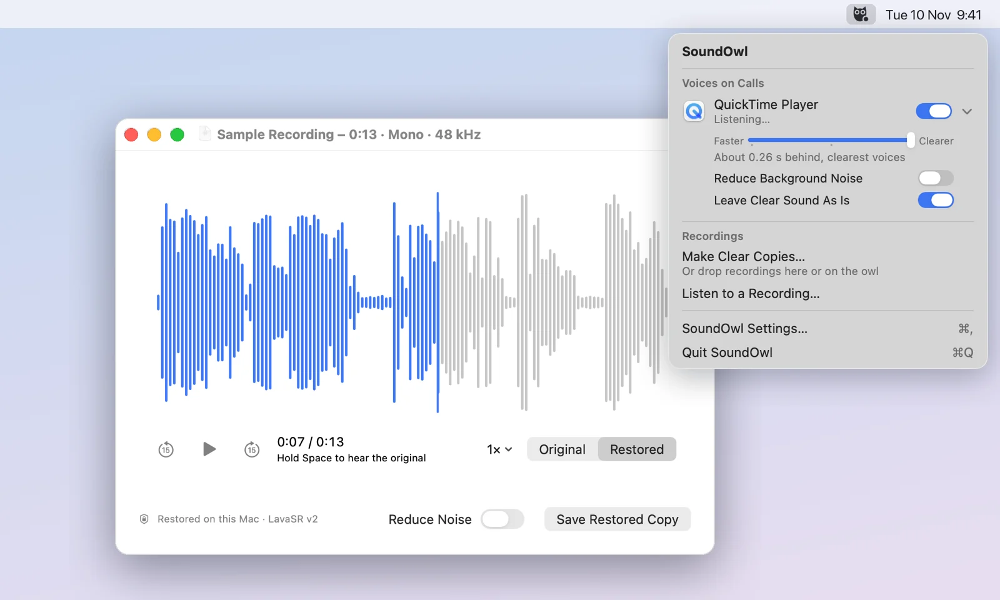

An owl in your menu bar.
Click it and everything SoundOwl does is right there. It's made for speech, and it leaves everything else alone.
Calls and videos
Switch on the app you call or watch with: Zoom, Teams, a browser. Voices are restored as you hear them, about a fifth of a second behind. Music and sound that's already clear play untouched. Headphones only, unless you say otherwise.
Clear copies
Drop recordings on the owl, or right-click them in Finder and choose
Restore with SoundOwl. Copies appear next to the originals with their title,
artist, album and artwork. A Shortcut and soundowl restore in Terminal do
the same.
Listening
Open a podcast, lecture or audiobook with SoundOwl and it plays restored right away, even if it's ten hours long. Hold Space to hear the original, let go to hear the difference. It remembers where you stopped.

How it works
SoundOwl runs LavaSR v2, a 50 MB speech restoration model by Yatharth Sharma (paper). It looks at the part of the voice that survived and predicts the frequencies that didn't, up to 48 kHz. The optional noise reduction is UL-UNAS by Xiaobin Rong and colleagues.
The model downloads once, the first time you open the app, and then everything happens on your Mac. Your recordings are never uploaded. The models run in ONNX Runtime; the signal processing around them is native Swift on Apple's Accelerate framework, tested to match the reference implementation.
Long recordings are restored in 30-second pieces, starting from where you're listening, so you never wait for the whole file before you can hear it. Live works on the sound as it arrives, in small overlapping blocks, and Apple's built-in sound classifier tells it when an app is playing music, so it steps aside. The engine notes have the details.
- Speed
- About 140× realtime on an M5 Pro. An hour of speech in under 30 seconds.
- With noise reduction
- About 48× realtime.
- Live
- About 0.2 s behind the app. Faster or clearer per app.
- Model download
- 52 MB, once. Credited and removable in Settings.
- Formats
- Opens MP3, M4A, AAC, WAV, AIFF and FLAC. Exports AAC, Apple Lossless or WAV.
- Your audio
- Stays on your Mac.
Free, and it stays that way
SoundOwl is open source under the Apache 2.0 license, the same license as the model it runs. Read the code, file an issue, or send a pull request on GitHub. If it saves you an afternoon, you can sponsor its development.